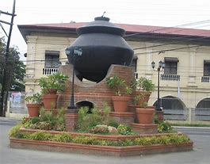

Places To Visit in The Philippines
HOME
BANGUI
PAGUDPUD

San Nicolas was established by Augustinian missionaries. Vigan, the first Spanish mission center in this region, was founded in 1572. In the year 1575, when the Spaniards first explored the Laoag (Padsan) River, they met hostile resistance from the natives of San Nicolas and Laoag. In another expedition dispatched from Vigan in 1584 San Nicolas was established and Laoag followed a year later.